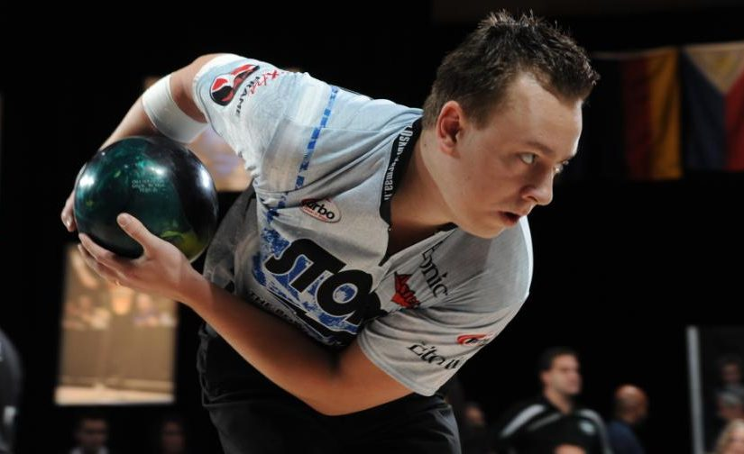
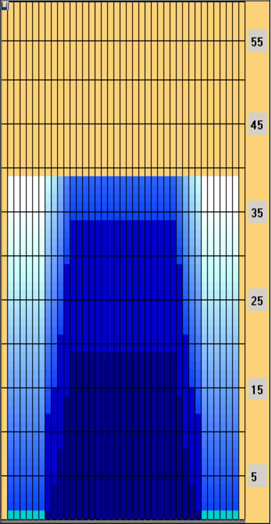

How to hook the ball?
There are currently 2 main ways to hook the ball. The more known and traditional method of hooking the ball is called one handed bowling, where bowlers use their middle, ring and thumb finger to release the ball. Do note that everyone bowls differently, so this explanation may not work for you, as it is just a general guideline as to know how hooking the ball works.
Tips and tricks for bowling in general
- Relax the armswing
- By relaxing the armswing, it allows you to be more consistent as you are not using your muscles which can affect ball speed or accuracy.
- Follow through
- Following through with arm motion shows where your ball is going to go as generally where your arm is after following through is where your ball will go
- Aim using the arrows on the board
- As the arrows on the board are closer to you, it will be easier to aim there as compared to the pins.
- Pushaway and starting position
- A pushaway can help to gain more momentum for the backswing which can increase ball speed and power while holding the ball as close to your body in your starting position makes it so that there is more control as less muscle is used to hold it.
- Pinky and index fingers
- The postitioning of the pinky and the index matters too. If you prefer to keep all fingers close to one another when gripping your fingertip ball, you tend to stay behind the ball and produce a low axis tilt release which, in turn, produces a moderate or small hook motion on the back-end of the lane. Spreading your fingers offers an option in ball motion control and increased hook.
How to bowl explained
One handed bowling with 5-step approach(Right handed)
One handed has been the norm since the ancient times and remains as the more traditional style of bowling.
Starting postition
When holding the ball in your starting position, make sure it is as close as you can to your body while still being comfortable. As the ball is closer to your body, less strength is needed to keep the ball in that position, allowing you to have better stamina for more games. It is good to also ensure that the shoulder of the arm holding the ball is facing your target for better accuracy. Try your best to make sure that the index and pinky fingers are in the same spot everytime for more consistent results.
First step
Generally the nothing much happens on the first step. The bowler takes a step forward with their left foot, and does the pushaway of the ball if they have one.
Second step
On the second step, the bowler will step over to the left with their right foot, allowing the ball to swing back freely, indicating the start of their backswing.
Third step
This is the step in which the bowler's backswing reaches its highest point. Bowlers typically would extend their left arm forward for stability and to aim.
Fourth step
This is the point where the bowler starts to get low and speed up. This is also when the arm starts to swing down and forward. Try to keep your hand behind the ball and bend the elbow slighty if you find it hard to get under the ball for hooking.
Last step
On this step, some bowlers choose to slide on their left foot to let the ball go through more smoothly and ensure balance, while some choose to plant their foot into the ground. Do what is more comfortable as one handed bowling is not affected that badly by this. At the release point of the swing(about parallel to your last step), rotate your hand to the side of the ball, as if reaching out for a handshake. This generates the axis rotation which is important for the ball to hook. Then let the thumb out first before the other 2 fingers. The speed in which you execute this process generates your "rev" rate(revolutions per minute). Your left hand should be extended out to your left while your right leg should kick out behind your left foot
Post shot
Make sure that your arm follows through with your shot and keep it swinging. Stay in the position until the ball has hit the pins as it is a good practice of habit. If you manage to post your shot, it means you threw the ball correctly and thus will not lose balance.
This is a general summary of how to bowl one handed, without going too deep into what affects the consistency or release as this is for beginners.

One handed release

One handed runup and post shot
Two handed with 5 step(right handed)
2 handed bowling is a style that only requires 2 fingers to hook the ball. Although it is called two-handed bowling, the second hand is mostly used for support and will be removed at the release point.
Starting position
The starting position is very similar to the one handed style, with the only difference being how you hold the ball. Try to rest the ball on your arm with your wrist curled up around the ball at the front. Also make sure that your other hand is placed on the ball above your dominant hand. This is preparation for the backswing.
The first step
The only thing that is different on the first step is that the pushaway is not done now. Some two handed bowlers do take their side step(to create the path for ball swing) on this step, one example being Jason Belmonte.
The second step
This is the time where two handers do their pushaways and prepare for their backswing.
The third step
The third step is when two handers will do their backswing. Instead of swinging all the way back as high as they can, two handers would keep it quick and short, relaxing the right arm while supporting the ball with the left hand

The 2 hand backswing
The fourth step
Usually the fourth step for two handed bowlers will be a quick step, as if they are hopping, to gain more momentum for higher ball speed and rev rate. This is also where the backswing reaches the highest point.
The last step
The final step is where you slide and release the ball. For 2 handers, the slide is important as releasing the ball at the same time of the swing can increase ball speed. For the release for 2 hands, instead of rotating the ball, its better to keep your hand behind the ball. This makes it so that the ball would not hook as much as the rev rate is high enough to help the ball hook into the pocket.
Post shot
Basically doing the same thing as one handers, left hand out to the side, right leg behind and out to the left, while continuing to swing the arm

2 handed release
Although most people stick to the normal one hand or two hand styles, there are some people that have a unique way of bowling. Some of which are people like Tom Daugherty, which bowls like a one hander, but only uses two finger holes like two handed bowlers. Another example is Tim Cagle II, A PBA bowler that is known for his "hadouken" style of bowling, where he pushes the ball from the chest like he is doing a chest pass.
Oil Patterns
Oil patterns are a key part to knowing how the ball hooks excluding trial and error. Knowing what pattern you are bowling on can affect how you bowl completely. However, it is very rare to be bowling on anything other than a house shot unless you are going pro, so this topic will not be touched on that much.
Typically, when you go to any bowling alley to have fun bowling with friends, the oil pattern will be called a "House Shot". This oil pattern may differ abit from alley to alley, the general idea is the same; more oil in the middle and less on the outside(between 10 board and the gutter). Since there's very little oil outside the 10 board, the lanes are very forgiving if you miss to the outside. There’s plenty of time for the ball to recover and plenty of friction for the ball to grab the lane and get back to the pocket. Likewise, with the extra oil in the middle, if you miss to the inside, the oil will let the ball carry farther down the lane before picking up some traction at the end. Either way, you miss, the pattern will do its best to get your ball to the pocket.

Typical house shot